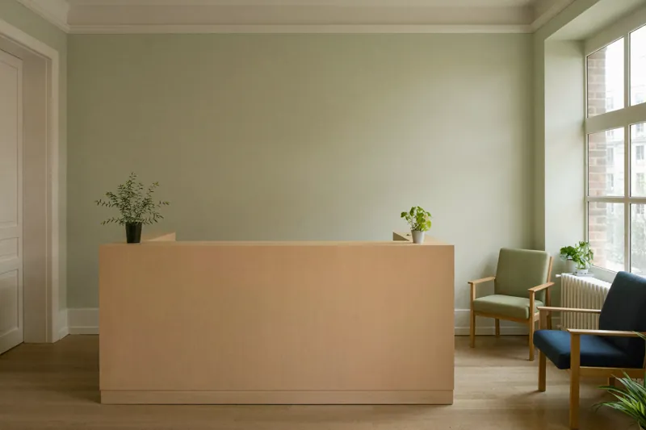

Dres. Albers & Brökelmann - Ihre Zahnärzte in Münster
|
StartseiteUnser TeamLeistungenProphylaxeAnfahrtSprechzeitenGästebuchLinksImpressum
Termine nur telefonisch!
Tel. 0251 / 00 00 00 |
Herzlich Willkommen! Liebe Patientinnen und Patienten, herzlich Willkommen auf der Homepage unserer Zahnarztpraxis am Rosenplatz in Münster. Auf diesen Seiten möchten wir Ihnen unsere Praxis und unser Team vorstellen und Sie über unser Leistungsspektrum informieren. Wir bieten Ihnen das gesamte Spektrum der modernen Zahnheilkunde. Selbstverständlich behandeln wir auch Kinder und Angstpatienten. Bitte vereinbaren Sie telefonisch einen Termin. Aktuelles: Unsere Praxis bleibt vom 23.12.2010 bis 02.01.2011 geschlossen. In dringenden Fällen wenden Sie sich bitte an den zahnärztlichen Notdienst.
Sie sind Besucher Nr. 0048217
Diese Seite ist optimiert für Internet Explorer 7 bei einer Auflösung von 1024 x 768. |